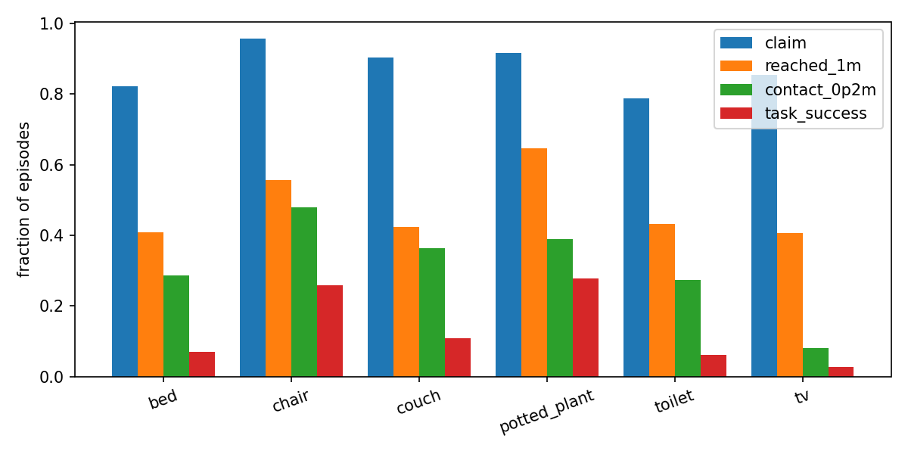
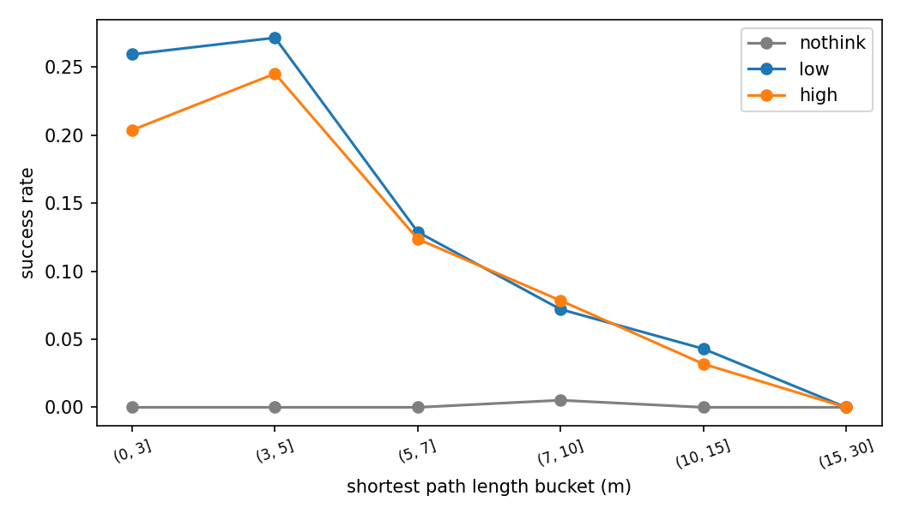
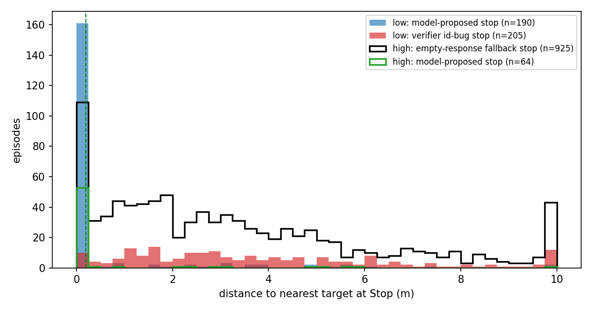
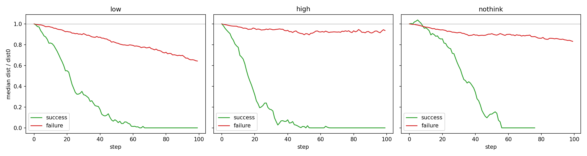

HCBv6 / HumanClaw：任务难度与 GPT-5 能力误差分析（v2）
日期：2026-07-05 · 数据/脚本：humanvla/outputs/gpt5_capability_analysis_20260705/
分析对象：GPT-5 nothink / low-thinking / high-thinking 三个 full-val run（1218 episodes，41 scenes，6 类目标，max 100 steps）。
报告结构按「任务 overview（分布与难度划分）→ 定量（GPT 对哪些题做得好/不好）→ 定性（为什么）」组织。所有结论来自对每个 episode 的 step 级日志解析：每步的动作、pelvis 位置、身体关节到最近目标 AABB 的距离、planner 的 visible_state 文本、verifier 的 proposed/final action。与 07-04 那份报告（侧重 token-cap 系统故障）不同，本报告以模型能力为主轴，系统因素被显式剥离并单列（§6）。
0. TL;DR
任务侧： - 难度指标彼此高度共线（path length ↔ choice points 相关 0.95），有效的独立难度轴只有三个：最短路径长度、转弯数、（极端）障碍密度；choice point 数不提供独立信号。障碍计数已用"剔除地毯等平铺物 + 行走高度带"过滤后复核（difficulty_r3），结论不变。 - 类别难度不是同一回事：chair/plant 容易主要因为目标实例多（中位 14–17 个 vs 其他类 2 个）；tv 难主要因为判据物理性（92% 的 tv AABB 悬空 >0.5m，到 1m 内的 episode 仅 20% 能满足 0.2m 身体接触）。
模型侧（low-thinking run 为主）： - 成功率随最短路径长度 28%→3%（四分位）陡降，回归 OR=0.41/SD，是最强难度因子；转弯数在控制路径长度后仍独立显著（同一路径分位内，有转弯 vs 无转弯成功率约减半）。 - 难度打击的漏斗阶段不同：路径长度/choice 主要打击「看见→走到」（P(1m|claim) 0.78→0.23）；转弯数还额外打击「最后一米」（P(contact|1m) 0.72→0.31）；障碍密度只在最高桶（>42 个）显著。 - 失败模式随难度迁移：easy 题死于终止与最后一米（contact_no_stop 24.5% + last_mile 14.3%），hard 题死于搜索（claimed_not_approached 49% + never_found 11.7%）。 - 模型的 Stop 决策精度高（84% 落在 0.2m 内）、召回极低（18% 的 episode 摸到目标却不停）；幻觉式宣布完成只有 2.4%。 - Reasoning effort 的最大作用是终止决策：nothink 在 920 个 episode 里只自主提议过 1 次 Stop（那次就是它唯一的成功），而它的 1m 到达率仍有 38%。 - 定性归因出 7 种可复现的失败行为模式（§4）：接触确认缺失、意图震荡、开环无效重复、深度/目标误判、门口通过死循环、长路径步数耗尽、以及多实例救场（成功侧机制）。
系统侧（需修复/剥离，§6）：
- verifier 的 final_action_id/name 错配 + 代码按 id 解析 → 16.1% 的 episode 被错杀（修复后 low 估计 14.1%→16.5%）；
- sit 不终止、不计分 → 5.2% 的 episode 按指令坐上了目标却判失败；
- high run 76% 的 episode 被 empty-response fallback 强制终止，不可用作能力分数（cap 修复已完成，待重跑）。
1. 数据、指标与归因方法
1.1 运行与有效样本
| run | reasoning_effort | 有效 episodes | 成功率 | 备注 |
|---|---|---|---|---|
| nothink | none | 920/1218 | 0.11%（1 例） | run 未跑完；无 API 污染（planner_fail=0） |
| low | low | 1202/1218 | 14.06%（169 例） | 主分析 run；16 个 episode OOM 缺失 |
| high | high | 1218/1218 | 12.97% | 76% episode 被 empty-response fallback 终止，仅作参考 |
三个 run 共同有效的 908 个 episode 上：low 13.3% / high 12.3% / nothink 0.11%。
1.2 关键度量
dist：每步身体 56 个关节到最近目标实例 AABB 的最小距离（与成功判据同源，阈值 0.2m）。claim：planner 每步visible_state是否正面提及目标类别（复用 pipeline 的 alias+negation 匹配器；15 例人工抽查全部为真实提及）。本批 run 渲染级可见性（render_find）被禁用，claim 是"模型自称看见"，无视觉 ground truth。- 动作归因：解析 verifier 的
proposed_action（planner 提议）/verdict/final_action（实际执行），区分模型决定与系统替换。 - 成功判定：
task_success = 模型发出 Stop/Stand 且当时 dist < 0.2m。sit 不终止 episode、不参与判定（§6.2）；at_target短路机制全程 0 触发（死代码）。
1.3 失败分类（修正版 taxonomy，每个失败 episode 唯一归类）
| taxonomy | 定义 | 归因 |
|---|---|---|
| verifier_bug_stop | verifier id/name 错配替换出的 Stop 终止（§6.1） | 系统 |
| model_wrong_stop | 模型自主提议 Stop 但停在 >0.2m | 模型：终止精度 |
| contact_no_stop | 曾达到 ≤0.2m 但从未有效 Stop | 模型：终止召回（含 sit 协议） |
| last_mile_failure | 曾到 ≤1m，从未 ≤0.2m，也没停 | 模型：近距离控制/感知 |
| claimed_not_approached | 声称看到过目标，但从未到 1m 内 | 模型：导航/搜索 |
| never_found | 从未声称看到，也从未接近 | 模型：探索 |
2. 任务 Overview：分布与难度划分
2.1 组成
41 个 HSSD 场景 × 各 ~30 episodes = 1218。类别：chair 231 / couch 231 / bed 218 / potted_plant 205 / tv 185 / toilet 148。bed/couch/toilet 的指令带 "Finally, sit on the …"，chair/potted_plant/tv 只要求 touch。max 100 steps；单步位移 0.1–0.6m。
2.2 难度指标：定义与分布
难度指标基于 Habitat pathfinder 在最短路径上计算（difficulty_full_r2，2m corridor 版）：
| 指标 | 定义 | 中位数 | P10–P90 | 分桶（episode 数） |
|---|---|---|---|---|
path_length_soft_m |
起点到目标的最短路径长度 | 6.37 | 3.6–13.1 | ≤4.4 / 4.4–6.4 / 6.4–9.5 / >9.5（293/296/294/293；26 例 NaN） |
objectnav_geodesic_m |
到最近目标实例的测地距离 | 4.40 | 1.4–12.7 | 四分位 301×4 |
turn_count_30deg |
最短路径 RDP 简化后 >30° 转弯数 | 1 | 0–2 | 0/1/2/3+（486/369/233/114） |
choice_point_count |
最短路径沿途可行方向分支多的决策点数 | 6 | 3–16 | ≤4 / 4–6 / 6–11 / >11（374/233/335/260） |
static_objects_in_corridor |
最短路径 2m 走廊内静态物体数 | 27 | 8–61 | ≤16 / 16–26.5 / 26.5–42 / >42（322/279/310/291） |
dynamic_objects_in_corridor |
同上，动态物体 | 9 | 3–19 | ≤6 / 6–9 / 9–14 / >14 |
n_goal_objects |
同类目标实例数 | 3 | 1–20 | 1 / 2–4 / 5–15 / >15（218/520/260/204） |
共线性警告：path_length 与 choice_point_count / choice_entropy / corridor_area 的 Spearman 相关达 0.92–0.98——它们量的是同一个东西（"路远 = 决策点多 = 走廊面积大"）。paper 中不应把它们当独立难度轴并列；分层分析（§3.3）确认 choice point 在控制路径长度后无残余效应。建议 paper 报告三个弱相关的轴：路径长度、转弯数、障碍密度，外加目标多重性作为任务属性。
26 例 path=NaN 的解释（疑似无解 episode）：这 26 例全部是 reachable_goal_objects=0——difficulty 脚本把每个目标实例的中心 snap 到 navmesh 全部失败，集中在 5 个 scene（102343992×9、104862417×8、102816600×6 等，前两个正是成功率 0% 的最差 scene）。实证上它们接近无解：三个 run 共 77 次尝试中只有 3 次达成 0.2m 接触（high 成功 1 例、nothink 接触 2 例，均为目标中心在货架/花盆内但 AABB 边缘勉强可触的 potted_plant 边界情况），其余 ~23 例在任何 run 中从未接触（low run 上 26 例 contact=0/26，min_dist 中位 3.07m，而全库 contact 率 32%）。建议：paper 中把这 26 例从分母剔除（low 成功率 14.06%→14.37%）或单独标注；下一版 benchmark 生成时应以"navmesh 可达空间到目标 AABB ≤0.2m"为准做可解性校验（见 §6.4）。
障碍物计数的过滤（difficulty_r3，已验证）：原始（r2）corridor 计数没有语义过滤——建筑地板/墙属于 stage mesh 天然不计，但 rug/carpet/doormat 等平铺物、挂墙/吊顶装饰会被算作"障碍物"。我们重算了过滤版 r3：剔除 floor_covering 类（HSSD semantics 类别匹配）+ 行走高度带过滤（物体 Y 范围须与 [路径高度+0.1m, +1.9m] 相交），每 episode 平均剔除 ~34 个物体（类别中位 8 + 高度带中位 26），static 计数中位 26→21。结论不变：r2/r3 排序相关 0.963，过滤后障碍计数在前三个四分位对成功率依然无梯度、只有最密尾部才有效应（§3.2）——弱信号不是地毯噪声造成的，是真实现象。本报告障碍物相关数字均已更新为 r3 口径。对比之下，碰撞指标本来就过滤过：static_collision_step_fraction 已忽略脚/踝与 stage 地面及 carpet/rug/floor/mat 类低表面的接触。
2.3 类别差异的三个来源
- 目标多重性：chair/plant 的实例数中位 14/17，其余类别 2。实例多 → 有效最短路径更短、任意方向探索更容易撞见。原始分桶：n_goal=1 成功率 10.6%、2–4 仅 7.3%、5–15 21.5%、>15 25.5%。加类别固定效应后多重性不再显著——"chair/plant 容易"与"实例多"高度混同，paper 需二选一表述或明示混同。
- tv 的判据物理性：92% 的 tv 目标 AABB 底面高于 0.5m（44% 高于 1m，挂墙/柜上）。到 1m 内的 tv episode 只有 20% 达成 0.2m 身体接触（bed 70%、chair 86%、couch 86%、plant 60%、toilet 64%），min_dist 中位数卡在 0.46m。tv 的 2.7% 成功率更多反映判据而非模型；建议对 tv 做 0.2/0.5m 双阈值 sensitivity（离线重打分即可，无需重跑）。
- sit 指令（bed/couch/toilet）：增加终止序列长度（转身–后退–坐），且 sit 本身不计分（§6.2），拖低这三类的终止成功。
2.4 场景间方差与难度分层
- scene 级成功率（每 scene ~30 eps）：中位 13.8%，IQR 10–20%，范围 0%–30%。最难的 3 个 scene（102343992、104862417、106879080）成功率为 0，路径中位 6.2–9.7m；其中包含户外大院场景（草地/patio，最短路径 28m 级）。回归必须用 scene 聚类稳健 SE（本报告如此）。
- 综合难度分层（difficulty_score_3d 三分位）：easy/medium/hard 的 low 成功率 = 27.6% / 12.0% / 3.6%。hard 层几乎全灭，是 benchmark 的头部空间。
3. 定量：GPT 对哪些题做得好/不好
3.1 总体结果与失败构成（low, n=1202）
| taxonomy | n | 占比 | 归因 |
|---|---|---|---|
| success | 169 | 14.1% | — |
| claimed_not_approached | 370 | 30.8% | 模型：导航/搜索 |
| contact_no_stop | 217 | 18.1% | 模型：终止召回（62 例为 sit 协议） |
| verifier_bug_stop | 193 | 16.1% | 系统（§6.1） |
| last_mile_failure | 154 | 12.8% | 模型：近距离控制 |
| never_found | 69 | 5.7% | 模型：探索 |
| model_wrong_stop | 29 | 2.4% | 模型：终止精度 |
能力漏斗：claim 87.9% → 到 1m 48.2% → 接触 0.2m 32.1% → 成功 14.1%（P(1m|claim)=0.53，P(contact|1m)=0.67，P(success|contact)=0.44）。
3.2 每个难度维度 × 成功率与漏斗阶段
核心表：每个维度不仅看成功率，还看它打击漏斗的哪一级。
最短路径长度（也代表 geodesic / choice points / corridor area，四者共线）：
| path bucket | n | claim | 到1m | 接触 | 成功 | P(1m|claim) | P(ct|1m) | P(sc|ct) |
|---|---|---|---|---|---|---|---|---|
| ≤4.4m | 293 | 0.94 | 0.75 | 0.54 | 0.280 | 0.78 | 0.71 | 0.52 |
| 4.4–6.4m | 296 | 0.93 | 0.60 | 0.44 | 0.176 | 0.64 | 0.73 | 0.40 |
| 6.4–9.5m | 294 | 0.87 | 0.41 | 0.23 | 0.088 | 0.44 | 0.57 | 0.38 |
| >9.5m | 293 | 0.79 | 0.20 | 0.11 | 0.031 | 0.23 | 0.56 | 0.28 |
→ 路径长度打击每一级，但最陡的是「看见→走到」：P(1m|claim) 从 0.78 掉到 0.23。远处能看见（claim 仍有 79%）却走不到。
转弯数（控制路径长度后仍独立显著，OR=0.65/SD, p=0.002）：
| turns | n | claim | 到1m | 接触 | 成功 | P(1m|claim) | P(ct|1m) | P(sc|ct) |
|---|---|---|---|---|---|---|---|---|
| 0 | 486 | 0.92 | 0.60 | 0.43 | 0.226 | 0.64 | 0.72 | 0.52 |
| 1 | 369 | 0.88 | 0.43 | 0.31 | 0.111 | 0.49 | 0.72 | 0.36 |
| 2 | 233 | 0.83 | 0.40 | 0.22 | 0.069 | 0.43 | 0.54 | 0.32 |
| 3+ | 114 | 0.81 | 0.31 | 0.10 | 0.018 | 0.36 | 0.31 | 0.18 |
→ 转弯的独特之处：除了打击「看见→走到」，还打击「最后一米」（P(ct|1m) 0.72→0.31）和「接触→成功」。解释：转弯多 = 视线被打断 + 目标藏在拐角/家具后，末端逼近同样受限。这是与路径长度不同的独立信号。
2m 走廊障碍物（r3 过滤口径：已剔除地毯等平铺物与非行走高度带物体；只有极端桶显著）：
| static objects (r3) | n | claim | 到1m | 成功 | P(1m|claim) | P(ct|1m) |
|---|---|---|---|---|---|---|
| ≤12 | 307 | 0.89 | 0.53 | 0.160 | 0.57 | 0.70 |
| 12–21 | 316 | 0.88 | 0.53 | 0.187 | 0.58 | 0.70 |
| 21–34 | 294 | 0.88 | 0.49 | 0.146 | 0.55 | 0.67 |
| >34 | 285 | 0.87 | 0.37 | 0.063 | 0.41 | 0.57 |
→ 前三桶基本持平，只有最密桶断崖（P(1m|claim) 与 P(ct|1m) 同时受损）。回归中 z 化后不显著（OR=0.94，p=0.50；效应集中在尾部，非线性）。未过滤的 r2 口径结论相同（排序相关 0.963）——弱信号不是地毯等测量噪声造成的。dynamic 物体同型（>14 桶 6.5%，其余 13.6–17.5%）。
目标多重性：
| n_goal | n | 成功 | 接触 | 备注 |
|---|---|---|---|---|
| 1 | 218 | 0.106 | 0.243 | |
| 2–4 | 520 | 0.073 | 0.279 | 最低——以 bed/couch/toilet 为主，含 sit 协议 + 大件类终止难 |
| 5–15 | 260 | 0.215 | 0.369 | |
| >15 | 204 | 0.255 | 0.451 | chair/plant 为主 |
起点直线距离（dist0）在控制 geodesic 路径后不显著（OR=1.50，p=0.155；path OR=0.23，p<0.001）——"直线近但要绕路"不是捷径，说明可达性（geodesic）才是真难度，也间接说明模型没有穿墙感知作弊的通道。
3.3 分层控制：哪些维度是独立的
同一路径长度分位内的成功率：
| path 分位 | 0 转弯 | ≥1 转弯 | 低障碍(≤21, r3) | 高障碍(>21, r3) | |
|---|---|---|---|---|---|
| Q1（短） | 0.325 | 0.181 | 0.278 | 0.280 | |
| Q2 | 0.254 | 0.116 | 0.238 | 0.104 | |
| Q3 | 0.093 | 0.087 | 0.093 | 0.084 | |
| Q4（长） | 0.091 | 0.020 | 0.040 | 0.026 |
- 转弯效应在短/中路径上几乎减半成功率，长路径上大家都低（地板效应）。
- 障碍效应在 Q2 有、Q1/Q3 无——弱且不稳定，主要由极端桶驱动。
- choice point 与 path 几乎完全共线（Q1 全部 ≤6、Q4 全部 >6），同分位内残余效应 ≈0（Q3: 8.3% vs 8.9%）。不要在 paper 中把 choice point 当独立因子。
逻辑回归汇总（scene 聚类 SE；因变量分别为成功与任意时刻接触）：
| 因子 | OR（成功） | p | OR（接触） | p |
|---|---|---|---|---|
| path_length /SD | 0.41 | <0.001 | 0.39 | <0.001 |
| turns /SD | 0.65 | 0.002 | 0.76 | 0.003 |
| static obj (r3) /SD | 0.94 | 0.50 | 0.89 | 0.23 |
| dynamic obj (r3) /SD | 0.88 | 0.42 | 0.86 | 0.19 |
| log(goals) /SD | 0.89 | 0.41 | 1.06 | 0.72 |
| cat=chair (vs bed) | 3.87 | 0.002 | 1.38 | 0.35 |
| cat=plant | 4.10 | 0.002 | 0.82 | 0.58 |
| cat=tv | 0.30 | 0.044 | 0.16 | <0.001 |
→ 把因变量从「成功」换成「接触」，chair/plant 的优势消失、tv 的劣势加深：chair/plant 赢在终止阶段（+多实例），tv 输在接触物理性。
3.4 失败模式随难度迁移
taxonomy 构成 × 综合难度三分位（low run）：
| tier | 成功 | claimed_not_approached | contact_no_stop | last_mile | never_found | verifier_bug |
|---|---|---|---|---|---|---|
| easy | 27.6% | 16.1% | 24.5% | 14.3% | 1.0% | 13.8% |
| medium | 12.0% | 25.8% | 23.5% | 14.3% | 4.1% | 18.1% |
| hard | 3.6% | 49.0% | 7.4% | 9.9% | 11.7% | 15.8% |
这是 error analysis 的主叙事表：easy 题的失败集中在"到了却完成不了"（终止 + 最后一米 ≈ 39%），hard 题的失败集中在"根本到不了"（搜索/导航 ≈ 61%）。模型不是均匀地差，而是两端各有一个能力墙。
3.5 两个诊断格子
easy-but-failed（path ≤4.4m 仍失败，211/293）：contact_no_stop 75 + last_mile 46 + verifier_bug 43 + claimed_not_approached 36。min_dist 中位 0.56m——短路径失败里 3/4 已经走到了目标附近，输在最后一米和终止；类别以 plant(48)/tv(44)/chair(42) 居多（tv=判据、plant=近距对齐、chair=终止）。
hard-but-succeeded（path >9.5m 成功，仅 9 例）：其中 7 例 n_goal≥4 或 dist0 远小于 path（例：chair 104862501 ep18，path 10.1m 但 dist0 仅 2.6m）——长路径上的"成功"大多是撞见更近的实例，真正走完长路径的成功只有 2 例（bed 102817140 ep22 走了 17.2m、88 步，见 §4.8）。
3.6 终止校准（模型 vs 系统）
对每个 Stop 归因（谁真正提议了 Stop）：
| run | 模型自主提议的 Stop | 其中 ≤0.2m | 系统产生的 Stop |
|---|---|---|---|
| nothink | 1（即唯一成功） | 100% | 43（38 个 id-bug） |
| low | 190 | 83.7% | 205（193 个 id-bug 终止） |
| high | 64 | 82.8% | 1009（925 fallback + 84 id-bug） |
模型说"我到了、停"时基本是对的（wrong-stop 仅 29 例 / 2.4%）；但 217 个 episode 摸到目标（min_dist 中位 0.000m、1m 内平均滞留 58 步、88% 的滞留步仍在 claim 目标）却始终不发 Stop。终止是 recall 问题不是 precision 问题——模型宁可无限微调也不做一次不可逆的完成承诺。
4. 定性：失败的行为学（案例）
对 12 个按难度格子抽样的 episode 逐步阅读，归纳出 7 种可复现的行为模式，每种给出案例 + 定量呼应。每个案例的执行轨迹俯视图（navmesh + 实际轨迹 + 最短路径）与 6 个代表案例的三联同步 3D 视频，见 Gallery 的 ⭐ 精选筛选；完整逐步日志见 case_storylines.txt。
4.1 接触确认缺失（contact verification gap）——easy 题最大杀手
案例：chair 102343992 ep12（path 4.4m）。t=14 已达 d=0.00，随后 85 步全部在"close the final centimeters / tiny lateral gap"，左右 0.10m 微横移直到 100 步耗尽，从未尝试 Stop。 机制：没有触觉反馈，视觉上无法区分 0cm 与 10cm；env_feedback 里"上一步有碰撞"的信息从未被当作"已接触"的证据使用。 定量呼应：contact_no_stop 217 例中 min_dist 中位 0.000m；<1m 滞留期动作 51% 是 side step。
4.2 意图震荡（intent thrashing）——sit 类的典型死法
案例：couch 102344529 ep19（path 4.0m）。t=49 达 d=0.00 后，子目标在"ensure zero-distance contact"与"rotate to put my back toward the couch for sitting"之间来回切换 50 步，两个意图互相打断，既没确认接触也没坐成。 机制：每步独立重新决策、没有对已选序列的承诺（commitment）；sit 编舞需要 3–5 步连续执行，被"再确认一下接触"反复重置。 定量呼应：107 例在 ≤0.2m 处坐过（说明编舞能启动），62 例坐完再没发 Stop；bed/couch/toilet 的 contact_no_stop 占其失败 21–25%。
4.3 开环无效重复（no feedback correction）
案例 1：tv 102344094 ep8。从 d=0.66 起连续 25+ 次 Side step left，距离单调升到 0.81m 仍不换方向——不核对动作效果。 案例 2：tv 104862501 ep25（走廊障碍 166 个）。隔着床对右墙做 60 步 "tiny right side step to touch the TV"，d 恒定 7.95m 纹丝不动——动作被床挡住无效，但模型既不检测无效也不改策略。 机制：模型不使用"距离是否在下降"这类过程反馈做闭环控制；对"动作执行了但没产生位移"无感知。 定量呼应：stuck 步占比在失败 episode 中位 0.07（低——大多数无效重复是"有位移但方向错"，不是卡死）。
4.4 深度/目标误判（depth & object misperception）——tv 的专属死法
案例 1：tv 107734254 ep19。在 3.2–4.4m 处连续 25 步小角度右转"center the TV"（越转越远），随后在 4.3m 处反复输出 "Stop because I have reached the TV and achieved zero distance"。 案例 2：tv 107734287 ep24。在 tight nook 里左右交替转向 37 步（travel 仅 1.9m），t=38 在 10m 处宣布 "Stop since I am already touching the TV"——本 run 仅有的 29 例模型幻觉停止之一。 机制：挂墙 TV 的"面对着它"在单目 ego 视角下与"贴着它"难以区分；黑色矩形（镜子、玻璃门、黑板）易被认作 TV。 定量呼应：tv 排除系统类后失败 41% 是 claimed_not_approached、36% 是 last_mile；tv 的 med_dist_first_claim 4.0m 为全类别最远。
4.5 门口通过死循环（doorway centering loop）
案例：toilet 102344094 ep21（path 仅 3.5m！）。t=14–35 在门口做 "turn slightly left/right to center the doorway" 交替微转 20 步；进卧室后又退出，最后跑到厨房"扫描 bathroom 入口"，100 步耗尽，d 从 3.0 涨到 4.5m。plant 102344094 ep14 同款（t=43–60 走廊对齐循环）。 机制：窄门 threading 需要精确的位姿控制，模型用"转一点-看一眼-再转一点"的策略，左右修正量相互抵消；一旦穿门失败还会误判房间拓扑（把 laundry 当 bathroom 方向）。 定量呼应：严格的左右交替转向 streak≥6 在全体 episode 只占 ~3%（这种循环通常混着 walk 尝试，不是纯转向），但在 easy-fail 案例中反复出现；它也是 verifier「替换被挡的 walk 为 turn」介入最频繁的场景（walk→turn 替换共 8945 步，占全部步数 9%）。
4.6 长路径：步数预算耗尽 vs 绕圈（两种都有）
案例：chair 106878858 ep14/15（户外大院，path 28.6m）。模型行为其实合理——沿走廊定向推进、朝 patio 系统性探索，100 步内 d 从 19m 稳定降到 10m 左右，travel 33m——但预算就是不够。 定量分解（path>9.5m 的搜索类失败 190 例）：27% 是"定向推进型"（travel/net<2，净位移中位 10.1m，已关闭 43% 初始距离——再给预算可能到达）；42% 是"绕圈型"（travel/net>4，只关闭 21%）；31% 混合。 含义：长路径失败不全是模型不会导航；~1/4 是 max_steps=100 的截断。paper 可做 step-budget sensitivity（对 directed 型延长 budget 重跑或外推）。
4.7 多实例救场（成功侧机制）
案例：chair 104862501 ep18（path 10.1m，n_goal=29）。模型先认错目标——对着 piano bench 十几步 "make contact with the bench"（d 反而从 2.6 升到 4.9，bench 不是标注目标）——随后透过门口看到另一把椅子，改道接近，d=0 后 t=76 明确 "Stop because contact with the chair has been achieved"。 含义：实例多的类别允许"认错也能得分"，这是 chair/plant 高成功率的微观机制，也解释了为何类别固定效应会吸收多重性效应。
4.8 成功模板（能力上限的证据）
bed 102817140 ep22（path 14.8m，真·长路径成功）：定向穿越两个房间（d 从 11.25 单调降到 0.14，60 步）→ sit 编舞 22 步（转身 90–120°、step back 确认背后接触、连续 3 次 Sit down）→ t=87 主动 Stop。 含义：感知、长程导航、last-mile、sit 编舞、终止承诺——每个子能力模型都具备；失败是可靠性/一致性问题（同样的编舞在 §4.2 里被意图震荡打断），不是能力缺失。这决定了 paper 的措辞：GPT-5 "can but doesn't reliably"。
5. Reasoning effort 光谱：none → low →（high 待重跑）
908 个共同 episode 上：
| nothink | low | high(污染) | |
|---|---|---|---|
| 成功 | 0.1% | 13.3% | 12.3% |
| 任意时刻接触 | 19.4% | 30.1% | 14.0%* |
| 到 1m | 38.3% | 46.9% | 28.9%* |
| 模型自主 Stop（全 run） | 1 | 190 | 64* |
| 模型时延中位/step | 17.1s | 35.1s | 123.4s |
| completion tokens/ep | 低 | 72K（reasoning 44K） | 198K（reasoning 184K） |
* high 的行为被 76% 的提前强制终止截断，只能当下界。
- none→low 的收益不对称：导航到达率 +8–10pt（有限），终止行为从"从不敢停"到"该停基本会停"（1→190 次自主 Stop）。思考的边际价值集中在不可逆的承诺型决策上。
- nothink 的 claim 率也有 80.5%——看见不需要思考，把看见转成行为决策才需要。
- 成本陡峭：low 每 episode ~118 次调用、354K prompt tokens、约 53 分钟 wall-clock；high 每步时延 3.5× low。
- low 与 high 在每个难度桶的成功率几乎重合（0.28/0.26、0.18/0.15、0.09/0.08、0.03/0.03）——目前无证据表明更高 effort 改善长程导航；确证等 cap 修复后的 high 重跑。
6. 系统/协议问题（paper 需剥离；建议修复后重跑）
6.1 verifier id/name 错配 → 16.1% episode 被错杀
verifier prompt（v3）要求"阻挡时用 Turn/Side step 替换 Walk、替换动作必须非 Stop"；GPT 在 final_action_name 写了 Turn<right><30> 等合法动作、reason 文字也说要转向，但 final_action_id 误填 1（=Stop/Stand）；_chooser_action 按 id 优先解析 → 执行 Stop → episode 终止（181/206 个 >1m 停止如此产生，中位发生在第 30 步）。修复：id/name 不一致时以 name 为准，并拒绝 Stop 作为 replace 结果。按难度匹配的反事实估计：修复后 low 成功率 14.1%→~16.5%。nothink（38/44 stops）与 high（84/148 非 fallback stops）同样受影响。
6.2 sit 不终止、不计分
指令要求 "Finally, sit on the …"，模型 107 次真的在 ≤0.2m 坐下（sit 步距离中位 0.0m），但成功只认 Stop/Stand；62 例（5.2%）坐完没有再发 Stop、跑满 100 步判失败，toilet 类受损最重。修复选项：sit@≤0.2m 记成功，或 sit 视同 stop，或删掉指令里的 sit；paper 应报告双口径。
6.3 high run 的 empty-response fallback（07-04 报告已详述）
10.9% 的 high API 调用被 4096 completion cap 截断为空 JSON → fallback Stop/Stand；925/1218（75.9%）episode 被强制终止，"干净" episode 仅 29 个且偏短。high 必须用新 cap（12000）重跑——cap 修复与空响应报错已完成。
6.4 其他
at_target完成短路机制全程 0 触发（死代码）。- 疑似无解 episode：26 例（2.1%）所有目标实例中心均无法 snap 到可达 navmesh（§2.2），实证接近零接触——episode 生成管线缺少以实际成功判据（0.2m 接触）为准的可解性校验；它们同时拖垮了 102343992/104862417 两个 0% scene。
- render_find（渲染级可见性 ground truth）被禁用——建议重跑时打开，可直接量化"可见未识别/不可见却声称"两类真感知错误。
- 评测分数对 scaffold 细节的敏感度（id-bug ±2.4pt、sit 口径 ±5.2pt、token cap 使 high 崩溃）本身值得作为 agentic-eval 的 methodological finding 写一小节。
7. 对 paper 的具体建议
Error analysis 小节的主线（对应本报告 §2→§3→§4）：
- 表/图：难度维度分布 + 相关矩阵（说明为何选 path/turns/obstacles 三轴）。
- 图：成功率 vs 路径长度（三个 effort 各一条线；
figs/success_vs_pathlen.png）。 - 图：漏斗阶段 × 难度（本报告 §3.2 的两个核心表，可画成分组条形或热图）——展示"路径打击 approach、转弯还打击 last-mile、障碍只在尾部"。
- 表：taxonomy × 难度层（§3.4）——"easy 死于终止、hard 死于搜索"。
- 图：Stop 校准（
figs/stop_calibration_attributed.png）——模型停得准但不敢停 + 系统错杀。 - 定性小节：7 种行为模式各配一句案例描述（§4），重点：接触确认缺失、意图震荡、开环重复、深度误判。
- 独立小节：pipeline 脆弱性与分数敏感度（§6）。
可直接下的 claim：长程搜索主导失败且随路径长度陡降；转弯数是独立难度轴；失败模式随难度从"终止/最后一米"迁移到"搜索"；终止 precision-high/recall-low；reasoning effort 主要买到终止决策；tv 是判据问题；多实例是 chair/plant 占优的机制；~27% 的长路径失败是 step budget 截断。
建议补充实验（优先级）：
1. 修 §6.1 chooser bug + §6.2 sit 口径 → low 重跑（或先用我们的反事实估计）。
2. high 用 cap=12000 重跑（已就绪）。
3. tv 阈值 0.2/0.5m 双口径离线重打分（无需重跑模拟）。
4. render_find 打开的 ~200 episode 子集 run，标定感知错误率。
5. step budget 150–200 的 directed-failure 子集重跑，验证"预算截断"占比。
6. ~~difficulty_r3：corridor 障碍物计数加类别+高度带过滤~~ 已完成（difficulty_r3/，脚本 run_difficulty_r3.py）：结论不变——障碍密度除极端尾部外仍非独立难度因子，弱信号不是地毯噪声。
8. 复现与文件清单
outputs/gpt5_capability_analysis_20260705/
├── extract_step_features.py # episode_log.json → steps_*.csv.gz / episodes_*.csv
├── analyze_capability.py # 漏斗/回归/图 → analysis.log
├── difficulty_deepdive.py # §2/§3 难度深挖 → difficulty_deepdive.log
├── followup_checks.py # stop/sit 机制、tv 可达性、抽查
├── followup2_attribution.py # proposed vs final 动作归因（全步扫描）
├── followup3_crossrun.py # 三 run stop 归因 + 修正 taxonomy
├── run_difficulty_r3.py # 过滤版 corridor 障碍计数（地毯类+高度带）
├── difficulty_r3/ # 过滤后的 episode_difficulty.csv（1218 eps）
├── case_storylines.txt # §4 的 13 个案例完整时间线
├── derived_{low,high,nothink}.csv # episode 级全部派生指标（含 taxonomy2、lr_flip、circling）
├── steps_{low,high,nothink}.csv.gz # step 级紧凑表
├── action_attribution_low.csv.gz # low 每步 verdict/proposed/final
├── stop_attribution_{nothink,high}.csv
└── figs/{funnel_low,success_vs_pathlen,stop_calibration_attributed,dist_curves}.png
难度表沿用 gpt5_low_high_analysis_20260704/difficulty_full_r2/episode_difficulty.csv（2m corridor 版）。
附图



